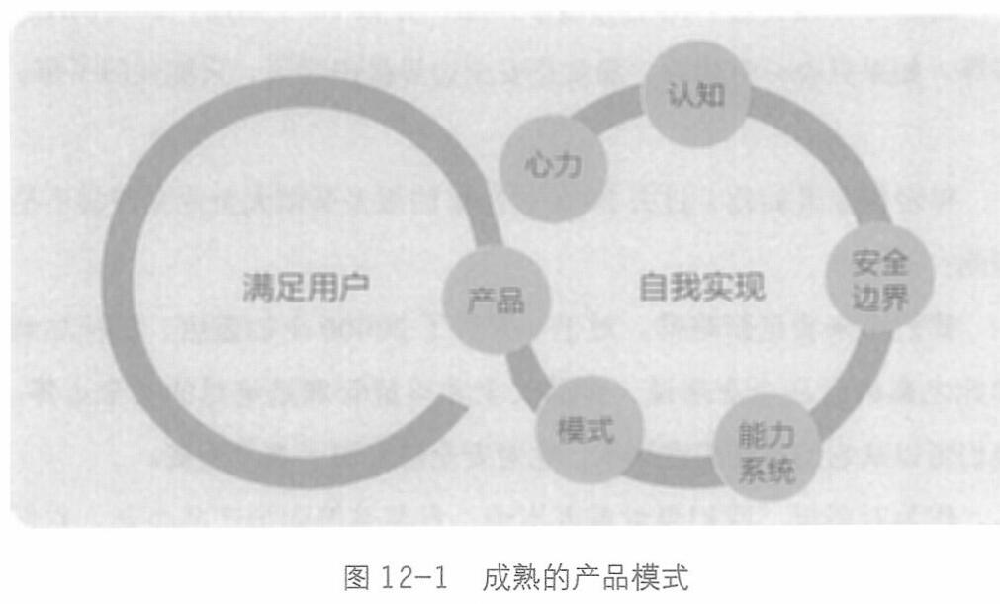

有的人可以一直刷新自己的认知，不断构建自己的新认知和新能力，一直走在时代的前沿； 而很多人则在30岁以前就固化了自己的认知，然后面对这个滚滚向前的时代越来越不理解，最终回避到时代潮流之外。

看综艺《这就是街舞3》，有一个小场景挺触动我。
节目组递给王嘉尔一碗鸡汤，说，这是你妈妈给你的。但王嘉尔只看了一眼，就判断不是。
节目组问为什么。王嘉尔说，我妈妈给我做鸡汤，会把鸡爪给我；还有，因为我喜欢吃鸡皮，她会给我放很多鸡皮，但是不会给我一块硬的肉。
而节目组的这碗鸡汤里，没有鸡爪，没有鸡皮，只有一块鸡肉。
所以，王嘉尔过去一次次从他妈妈手中接过的，是鸡汤吗? 那是妈妈的爱啊。
每一个女孩子第一次成为母亲的时候，对于如何照顾孩子、孩子364